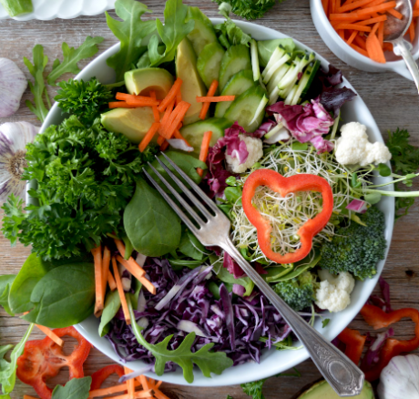

Lad os komme igang
At starte på en madplan kan virke overvældende, men det behøver ikke være kompliceret. Madplaner hjælper med at skabe struktur i hverdagen, sparer tid, og giver dig mulighed for at spise mere varieret og sundt. Uanset om du er studerende, har en travl hverdag, eller bare vil undgå den evige kamp om "hvad skal vi have at spise?", så kan en madplan være løsningen.
Tin 1: Lav en bundsalat, der holder hele ugen
En smart måde at spare tid på er at lave en bundsalat, som kan holde sig frisk hele ugen. Brug grøntsager, der er robuste og holder godt, som broccoli, gulerødder, løg, rødkål og spidskål. Disse grøntsager mister ikke hurtigt deres sprødhed og næring, selvom de opbevares i flere dage. Undgå grøntsager med højt vandindhold som agurk, spinat og tomater, da de har en tendens til at blive bløde og dårlige hurtigere. Opbevar salaten i en lufttæt beholder, så du altid har en frisk base klar, som du kan tilføje til dine måltider i løbet af ugen! Det er selvfølgelig også en mulighed at købe færdigskåret salater fra supermarkedet.
Denne bundsalat er alsidig: Du kan servere den som tilbehør til aftensmaden, putte den i en sandwich, tilsætte den til en suppe, eller bruge den som base til en frisk salatskål. På de dage, hvor du vil lave en salat, skal du blot tilføje de grøntsager, du har lyst til – det gør måltidsforberedelsen hurtig og nem!

Tin 2: Udnyt tilbud – skift ingredienserne ud
Når du handler, kan du spare penge ved at udnytte tilbud og bytte ingredienserne i dine opskrifter. Hvis du for eksempel planlægger at lave en fiskesuppe, men kyllingestrimler er på tilbud, så lav suppen og byt fisken ud med kylling i stedet. Det giver dig fleksibilitet til at tilpasse opskrifterne efter, hvad der er billigt, uden at gå på kompromis med smagen. Det fungerer med mange opskrifter – uanset om det er gryderetter, supper eller wokretter. På den måde får du stadig en lækker ret, samtidig med at du holder madbudgettet i skak!
Tin 3: Inspiration til dine måltider
For at gøre det endnu nemmere for dig at komme i gang, har jeg lavet nogle konkrete måltidsforslag, som du kan finde nederst på siden. Disse måltider er både budgetvenlige og fleksible, så du kan bytte ingredienser ud, hvis noget er på tilbud, eller hvis du har nogle rester, der skal bruges op. Kig igennem forslagene, og lad dig inspirere til dine egne variationer i køkkenet!